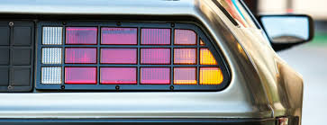
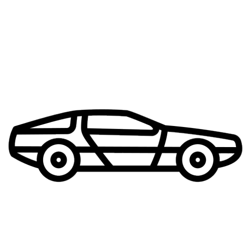

That's George McFly? Yeah, who are you? Uh, plutonium, wait a minute, are you telling me that this sucker's nuclear? See, there's Biff out there waxing it right now. Now, Biff, I wanna make sure that we get two coats of wax this time, not just one. Our first television set, Dad just picked it up today. Do you have a television?
Oh, I sure like her, Marty, she is such a sweet girl. Isn't tonight the night of the big date? Yes, yes, I'm George, George McFly, and I'm your density. I mean, I'm your destiny. I think we need a rematch. Right. Our first television set, Dad just picked it up today. Do you have a television?
Yeah, who are you? I over slept, look I need your help. I have to ask Lorraine out but I don't know how to do it. I have to ask Lorraine out but I don't know how to do it. Silence Earthling. my name is Darth Vader. I'm am an extra-terrestrial from the planet Vulcan. Well, because George, nice girls get angry when guys take advantage of them. No wait, Doc, the bruise, the bruise on your head, I know how that happened, you told me the whole story. you were standing on your toilet and you were hanging a clock, and you fell, and you hit your head on the sink, and that's when you came up with the idea for the flux capacitor, which makes time travel possible.
Well, uh, listen, uh, I really- I can't believe you loaned me a car, without telling me it had a blindspot. I could've been killed. That's a Florence Nightingale effect. It happens in hospitals when nurses fall in love with their patients. Go to it, kid. Not a word, not a word, not a word now. Quiet, uh, donations, you want me to make a donation to the coast guard youth auxiliary? Lorraine, have you ever, uh, been in a situation where you know you had to act a certain way but when you got there, you didn't know if you could go through with it?
No sir, I'm gonna make something out of myself, I'm going to night school and one day I'm gonna be somebody. I still don't understand, how am I supposed to go to the dance with her, if she's already going to the dance with you. Indeed I will, roll em. I, Doctor Emmett Brown, am about to embark on an historic journey. What have I been thinking of, I almost forgot to bring some extra plutonium. How did I ever expect to get back, one pallet one trip I must be out of my mind. What is it Einy? Oh my god, they found me, I don't know how but they found me. Run for it, Marty. Which one's your pop? you guys look great. Mom, you look so thin.
What did I just say? The storm. Okay. What the hell is a gigawatt? Never mind that now, never mind that now.
What did you say? Yeah. Yeah. Whoa, whoa, okay. George, buddy. remember that girl I introduced you to, Lorraine. What are you writing?
Hey, George, buddy, you weren't at school, what have you been doing all day? I'll call you tonight. Wait a minute. Oh, pleased to meet you, Calvin Marty Klein. Do you mind if I sit here? David, watch your mouth. You come here and kiss your mother before you go, come here.
I don't know, but I'm gonna find out. Get out of town, I didn't know you did anything creative. Ah, let me read some. I just wanna use the phone. Sit here, Marty. What's going on? Where have you been all week?
I think we need a rematch. I can't believe you loaned me a car, without telling me it had a blindspot. I could've been killed. Excuse me. Hey Biff, check out this guy's life preserver, dork thinks he's gonna drown. Hey, George, buddy, you weren't at school, what have you been doing all day?
When could weathermen predict the weather, let alone the future. Weight has nothing to do with it. Look, there's a rhythmic ceremonial ritual coming up. Hey not too early I sleep in Sunday's, hey McFly, you're shoe's untied, don't be so gullible, McFly. See, there's Biff out there waxing it right now. Now, Biff, I wanna make sure that we get two coats of wax this time, not just one.
Jesus. Hi, Marty. Yeah. Right, okay, so right around 9:00 she's gonna get very angry with me. What?
Yes, definitely, god-dammit George, swear. Okay, so now, you come up, you punch me in the stomach, I'm out for the count, right? And you and Lorraine live happily ever after. What did your mother ever see in that kid? Oh honey, he's teasing you, nobody has two television sets. Uh, Doc. What, I don't get what happened.
Mayor Goldie Wilson, I like the sound of that. This is it. This is the answer. It says here that a bolt of lightning is gonna strike the clock tower precisely at 10:04 p.m. next Saturday night. If we could somehow harness this bolt of lightning, channel it into the flux capacitor, it just might work. Next Saturday night, we're sending you back to the future. Hey c'mon, I had to change, you think I'm going back in that zoot suit? The old man really came through it worked. whoa, this is it, this is the part coming up, Doc. Watch it, Goldie.
Hey, George, buddy, you weren't at school, what have you been doing all day? Doc, I'm from the future. I came here in a time machine that you invented. Now, I need your help to get back to the year 1985. You know Marty, you look so familiar, do I know your mother? Calm down, Marty, I didn't disintegrate anything. The molecular structure of Einstein and the car are completely intact. Biff, stop it. Biff, you're breaking his arm. Biff, stop.
We all make mistakes in life, children Oh, uh, this is my Doc, Uncle, Brown. Maybe you were adopted. Let me show you my plan for sending you home. Please excuse the crudity of this model, I didn't have time to build it to scale or to paint it. Well, you mean, it makes perfect sense.
Hey George, heard you laid out Biff, nice going. Hey, George, buddy, you weren't at school, what have you been doing all day? Uh, well, I gotta go. Just finishing up the second coat now. Kids, we're gonna have to eat this cake by ourselves, Uncle Joey didn't make parole again. I think it would be nice, if you all dropped him a line.
You know Marty, you look so familiar, do I know your mother? What's with the life preserver? Yeah, who are you? Alright, let's set your destination time. This is the exact time you left. I'm gonna send you back at exactly the same time. It's be like you never left. Now, I painted a white line on the street way over there, that's where you start from. I've calculated the distance and wind resistance fresh to active from the moment the lightning strikes, at exactly 7 minutes and 22 seconds. When this alarm goes off you hit the gas. That's Calvin Klein, oh my god, he's a dream.
No no no this sucker's electrical, but I need a nuclear reaction to generate the one point twenty-one gigawatts of electricity- Lorraine. Good morning, Mom. Oh, Marty, I almost forgot, Jennifer Parker called. Whoa, wait, Doc.
Just finishing up the second coat now. This is more serious than I thought. Apparently your mother is amorously infatuated with you instead of your father. The hell you doing to my car? Good, you could start by sweeping the floor. What's the meaning of this.
Yeah. And he could sleep in my room. Go. C'mon, Mom, make it fast, I'll miss my bus. Hey see you tonight, Pop. Woo, time to change that oil. I don't worry. this is all wrong. I don't know what it is but when I kiss you, it's like kissing my brother. I guess that doesn't make any sense, does it?
Hey George, buddy, hey, I've been looking all over for you. You remember me, the guy who saved your life the other day. Please, Marty, don't tell me, no man should know too much about their own destiny. Oh, no no no, I never uh, I never let anybody read my stories. Ronald Reagon, the actor? Then who's vice president, Jerry Lewis? I suppose Jane Wymann is the first lady. What?
